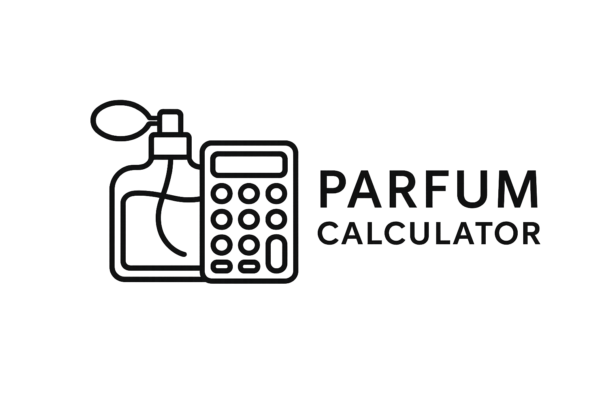

Disegna, valuta e perfeziona le tue formule in modo intuitivo, sempre con una visione chiara della piramide olfattiva.
Dosaggio Batch
Conversioni basate su 1 ml = densità inserita e 20 gocce per millilitro.
Materie Prime
Inserisci le note aromatiche in grammi. Le conversioni in ml, gocce e percentuali sono calcolate automaticamente rispetto al lotto.
Analisi automatica
Piramide olfattiva
Famiglia predominante
-
Bilanciamento
Miglioramenti suggeriti
Biblioteca formule
Esporta report
Scarica una copia strutturata della formula corrente per condividerla con il tuo team o archiviarla offline.